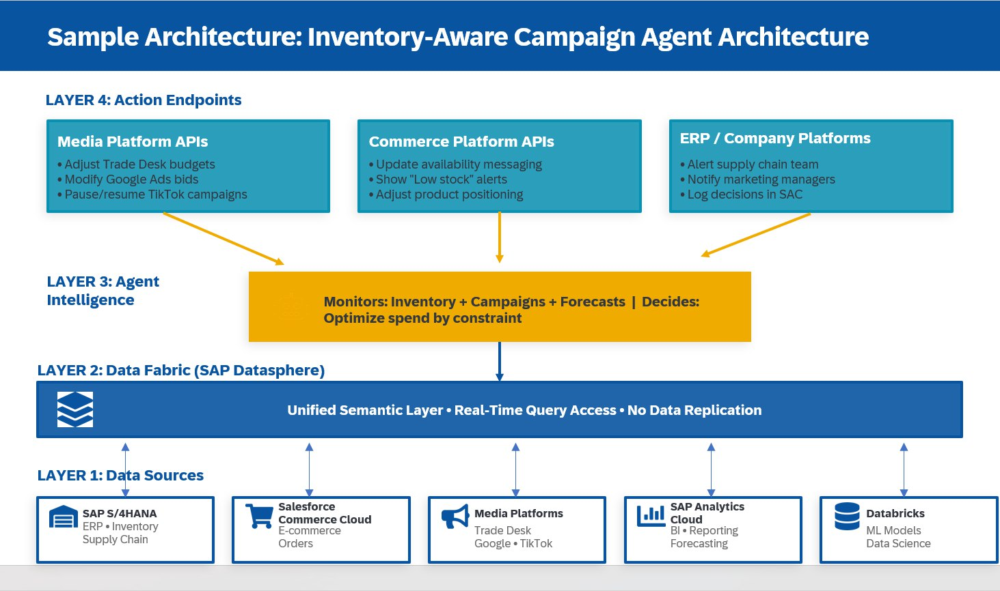

Use Case
The Inventory-Aware Campaign Agent
What It Does
Continuously monitors product availability across warehouses and automatically adjusts marketing spend, pauses out-of-stock promotions, and alerts supply chain to demand signals—all in real-time.
The Problem It Solves
- Marketing promotes products that are out of stock
- Supply chain learns about demand spikes too late
- Customers order products that can't be fulfilled
Why Data Fabric Is Essential
Inventory changes constantly—every order, shipment, return, and warehouse transfer. The agent needs real-time access to authoritative supply chain data, not stale snapshots from overnight batch syncs.
Real Example: Product X selling at 3x forecast in Northeast. Agent reduces ad spend by 40%, increases Mid-South by 60%, requests expedited transfer from Memphis warehouse, and alerts supply chain—all automatically.
In my 2022 article on business agility, I wrote about an outdoor retailer that ran a promotion for a hiking shoe collaboration that went viral. Sneakerheads worldwide started buying, flooding the retailer with orders, running them out of stock, and adding a slew of new customers they weren't prepared to serve.
I called it "the ultimate test of business agility, and a critical moment in time."
Two years later, I realize I was describing the problem incompletely. The real test wasn't whether the business could respond to unexpected demand. The real test was whether their systems could talk to each other fast enough to prevent marketing from making the problem worse.
Because here's what actually happens in that scenario:
Day 1: Viral moment hits. Orders flood in.
Day 2: Marketing sees campaign performing 10x above forecast. They increase ad spend.
Day 3: Warehouse is out of stock. Supply chain scrambles to source more inventory.
Day 4: Marketing is still driving traffic. Conversion rate drops because products are unavailable.
Day 5: Customer service is overwhelmed with "where's my order?" inquiries.
Day 6: Finance is calculating goodwill credits and expedited shipping costs.
Day 7: Marketing finally gets the memo to pause campaigns.
The business was agile enough to recognize the opportunity. But the systems weren't connected well enough to prevent seven days of wasted ad spend, customer frustration, and operational chaos.
This is the problem the Inventory-Aware Campaign Agent solves.
The Business Agility Paradox
When I wrote about business agility and customer data management, I argued that the foundation for business agility is customer data management. I still believe that's true. But I now realize there's a deeper truth underneath it:
Business agility requires system agility.
And most companies don't have it.
Here's the paradox: The things that can change fast—marketing budgets, campaigns, website messaging, webinar content, search keywords—are managed by systems that have no visibility into the things that can't change fast—product availability, supply chain lead times, warehouse capacity, production schedules.
Marketing can pivot a campaign in hours. Supply chain needs weeks or months to adjust inventory levels.
This asymmetry creates a dangerous gap. When marketing operates with agility but without context, that agility becomes liability.
The Seven-Day Disaster Scenario (Detailed)
Monday, 9:00 AM: Social media campaign launches promoting spring collection hiking boots. Budget: $50K/week across Meta, Google, TikTok.
Monday, 3:00 PM: Campaign is performing 3x above forecast. Click-through rates are exceptional. Conversion rate is strong. Marketing increases budget to $150K/week to capitalize on momentum.
Tuesday, 10:00 AM: Orders continue flooding in. Warehouse in Memphis has 2,847 units. At current sell-through rate, that's 4.5 days of inventory.
Tuesday, 4:00 PM: Supply chain sees the spike in their weekly dashboard review. They note it. Primary supplier is in Vietnam. Lead time: 8 weeks. They send an email to procurement about increasing the next order.
Wednesday, 9:00 AM: Inventory down to 1,923 units. Marketing campaign still running at $150K/week. No one has connected these two facts.
Wednesday, 2:00 PM: Warehouse manager sends Slack message to ops channel: "Hiking boot inventory getting low, heads up." Message is seen by 4 people. None of them work in marketing.
Thursday, 11:00 AM: Inventory: 847 units. Marketing dashboard shows campaign performance remains strong. Budget is increased again to $200K/week. After all, why wouldn't you scale a winner?
Thursday, 5:00 PM: Inventory: 312 units. Supply chain finally sends email to marketing: "FYI we're running low on SKU #47382." Email arrives in shared inbox. It's read. No action is taken because the campaign is "performing well."
Friday, 9:00 AM: Inventory: 0 units. Website now shows "Out of Stock" on product page. But ads are still running. Click-through rate remains high (people still want the product). Conversion rate craters (they can't buy it). Marketing spends $40K driving traffic to an out-of-stock product.
Friday, 3:00 PM: Customer service is flooded with calls. People placed orders earlier in the week. Where are their shoes? When will they ship? Why is the website now saying out of stock?
Monday, 10:00 AM: Marketing finally pauses campaigns after weekend review shows conversion rate collapse. Total wasted spend: ~$80K. Customer service backlog: 400+ inquiries. Finance is calculating costs: expedited shipping ($47K), goodwill credits ($23K), overtime for customer service ($8K).
Total cost of the disconnect: $158K in direct costs, plus immeasurable damage to customer relationships and brand trust.
And here's the thing: everyone did their job correctly. Marketing optimized for performance. Supply chain monitored inventory. Finance tracked costs. Customer service responded to inquiries.
The problem wasn't people. The problem was that the systems didn't talk to each other in time to prevent the disaster.
What Marketing Agility Actually Requires
In my 2022 article, I said: "What can change fast? Marketing budgets, campaigns, website messaging, webinar content, and search keywords."
That's still true. But I now understand that speed without context is dangerous.
Marketing can change fast. But marketing should only change as fast as the business can support those changes.
If supply chain needs 8 weeks to increase inventory, marketing shouldn't be able to 3x ad spend in 8 hours without triggering warnings that inventory can't support that demand.
This is the next phase of customer data management that I was pointing toward in 2022. I wrote:
"This next phase of customer data management, which brings the backend of agile business process together with the front end of customer engagement, is not about the next-best action or offer. It's about finding the next-best dollar."
But I didn't have the vocabulary yet to describe how to do that. Now I do.
The answer is agentic AI with real-time access to enterprise systems through data fabric architecture.
The Inventory-Aware Campaign Agent: How It Works
The Inventory-Aware Campaign Agent is not marketing automation. It's not a CDP. It's not a traditional "if-this-then-that" workflow.
It's an autonomous system that continuously monitors both marketing performance AND supply chain constraints, makes decisions based on business rules you define, and takes action to optimize for profitability rather than just performance.
The Agent's Continuous Monitoring Loop
Every 15 minutes, the agent evaluates:
- Current inventory levels across all warehouses and distribution centers
- In-transit inventory (what's on ships, trucks, planes)
- Allocated inventory (what's already promised to other channels or customers)
- Historical sell-through rates for each product by region
- Current marketing campaign performance (spend, impressions, clicks, conversions)
- Forecast demand based on current campaign trajectory
Then it asks: Given current inventory and inbound supply, what should we be promoting right now to maximize profitable revenue?
Decision Example: Tuesday, 2:00 PM
Current state:
- Memphis warehouse: 1,923 units of SKU #47382
- Current sell-through rate: 450 units/day
- Days of inventory remaining: 4.3 days
- In-transit inventory: 0 units
- Expected next shipment: 6 weeks
- Marketing spend: $150K/week driving traffic to this product
- Northeast region: 60% of sales volume
Agent's analysis:
- At current rate, inventory depletes Friday afternoon
- Marketing spend is accelerating depletion
- No near-term replenishment available
- Northeast region disproportionately driving demand
Agent's decision:
1. Reduce ad spend in Northeast by 40% (where inventory will deplete first)
2. Increase ad spend in Southwest by 30% (where alternative warehouse has similar inventory)
3. Send alert to supply chain: "Demand forecast for SKU #47382 increased 3x, recommend expediting next order"
4. Send alert to marketing team: "Campaign #4738 performing strongly but inventory constraints detected. Agent has optimized spend by region."
5. Update website: Add "Only X left in stock" messaging to product page
6. Trigger email to recent site visitors: "This product is selling fast—order now before it's gone"
Business outcome:
- Marketing spend is optimized for available inventory
- Regional allocation matches supply constraints
- Supply chain gets early warning with time to respond
- Customers get transparency about scarcity
- Revenue is maximized within operational constraints
The Key Insight: Optimization for Profit, Not Just Performance
Traditional marketing automation optimizes for performance metrics: click-through rate, conversion rate, cost per acquisition, return on ad spend.
The Inventory-Aware Campaign Agent optimizes for profitable business outcomes: revenue that can actually be fulfilled, at margins that make sense, without creating operational chaos or customer service nightmares.
Next-best action asks: What message should we send this customer?
Next-best dollar asks: What revenue can we profitably capture given our actual operational constraints?
The latter requires visibility into systems that marketing has never had access to before.
The Marketecture: Building the Inventory-Aware Campaign Agent
Let me walk through the ideal technical architecture using a fictional company—let's call them Summit Outdoor Co.—a $500M outdoor retailer with the following tech stack:
Summit Outdoor Co. — Current Systems:
• ERP & Supply Chain: SAP S/4HANA (inventory, procurement, finance)
• Commerce: Salesforce Commerce Cloud (e-commerce platform)
• Media: The Trade Desk, Google Ads, TikTok (paid media)
• Analytics: SAP Analytics Cloud (business intelligence)
• Data Science: Databricks (ML models, forecasting)
Summit has all the pieces. What they're missing is the connective tissue that allows these systems to work together in real-time.
Layer 1: The Data Fabric Foundation
Summit implements SAP Datasphere as their data fabric layer, creating a unified semantic layer across all systems. Here's what gets connected:
1. SAP S/4HANA (Supply Chain & ERP)
- Real-time inventory levels by SKU, warehouse location, condition
- In-transit inventory from Transportation Management
- Production schedules and work-in-progress from Manufacturing Execution
- Product costs, margins, allocated inventory
2. Salesforce Commerce Cloud (E-commerce)
- Product catalog, pricing, availability status
- Order flow (new orders, order rate by SKU)
- Customer browsing behavior, cart abandonment
- Promotion performance
3. Media Platforms (Marketing)
- The Trade Desk: Programmatic display campaigns, spend, impressions
- Google Ads: Search, Shopping, YouTube campaigns
- TikTok: Social campaigns, creative performance
- Unified view of spend and performance across channels
4. SAP Analytics Cloud (Business Intelligence)
- Historical performance by SKU, channel, region
- Margin analysis, profitability by product
- Forecast models for demand planning
5. Databricks (Data Science)
- ML models predicting demand elasticity
- Inventory optimization algorithms
- Customer lifetime value models
- Attribution models
Critical architectural requirement: SAP Datasphere provides query-time access to these authoritative systems without replicating data into another silo. Why? The agent needs decisions based on current state, not historical snapshots.
Example query across Summit's systems:
-- Agent queries across Summit's tech stack in real-time SELECT i.sku, i.warehouse_location, i.available_quantity, i.allocated_quantity, i.in_transit_quantity, i.expected_arrival_date, c.current_orders_last_24h, c.product_page_views, m.trade_desk_spend_daily, m.google_ads_spend_daily, m.tiktok_spend_daily, p.unit_cost, p.unit_price, p.gross_margin_pct, f.demand_forecast_7day FROM sap_s4hana.inventory_real_time i LEFT JOIN salesforce_commerce_cloud.orders c ON i.sku = c.product_sku LEFT JOIN media_platforms.campaign_performance m ON i.sku = m.product_sku LEFT JOIN sap_s4hana.product_master p ON i.sku = p.sku LEFT JOIN databricks.ml_forecasts f ON i.sku = f.sku WHERE i.available_quantity < (f.demand_forecast_7day * 0.8) AND i.in_transit_quantity = 0 AND (m.trade_desk_spend_daily + m.google_ads_spend_daily + m.tiktok_spend_daily) > 1000
This single query spans five systems:
- SAP S/4HANA (inventory + product data)
- Salesforce Commerce Cloud (order flow)
- Media platforms (campaign spend)
- Databricks (ML forecasts)
And returns real-time data showing: Which products are being heavily promoted but face inventory constraints with no near-term replenishment?
Layer 2: The Agent Runtime Environment
Summit deploys the agent in their existing Kubernetes cluster with access to:
- LLM for reasoning (GPT-4, Claude, Llama)
- Tool access for taking actions:
- Trade Desk API (adjust programmatic campaigns)
- Google Ads API (modify search/shopping budgets)
- TikTok Ads API (pause/resume social campaigns)
- Salesforce Commerce Cloud API (update product availability messaging)
- Slack API (alert marketing and supply chain teams)
- SAP Analytics Cloud API (log decisions for reporting)
- Business rules engine that encodes:
- Minimum inventory thresholds before triggering reductions
- Maximum budget shift percentages per decision cycle
- Notification escalation paths
- Override permissions and approval workflows
Example agent logic (pseudocode):
class InventoryAwareCampaignAgent:
def evaluate_and_act(self):
# Query current state
inventory_state = self.query_inventory_across_warehouses()
campaign_state = self.query_active_campaigns()
forecast_demand = self.calculate_demand_forecast(campaign_state)
# Find constraints
constrained_skus = self.identify_inventory_constraints(
inventory_state,
forecast_demand
)
for sku in constrained_skus:
# Calculate optimal action
action_plan = self.optimize_marketing_spend(
sku,
current_inventory=inventory_state[sku],
current_spend=campaign_state[sku],
business_rules=self.rules
)
# Execute if within authority
if self.is_within_authority(action_plan):
self.execute_action(action_plan)
self.log_decision(action_plan)
else:
self.escalate_for_approval(action_plan)
Layer 3: The Feedback Loop
The agent learns from outcomes by tracking:
- Decision effectiveness: Did reducing spend preserve inventory for higher-margin channels?
- Forecast accuracy: How well did predicted demand match actual orders?
- Operational impact: Did supply chain use early warnings effectively?
- Financial outcomes: What was the incremental profit vs. the counterfactual?
This feedback loop continuously improves the agent's decision-making over time.
Layer 4: The Human Interface
Critically, humans remain in the loop with:
- Dashboard showing agent decisions: What actions it took, why, and with what outcome
- Override capability: Humans can pause the agent or reverse decisions
- Rule tuning interface: Adjust thresholds, constraints, escalation paths
- Audit trail: Every decision is logged with full context for review
Example dashboard view:
The Implementation Roadmap
You can't build this overnight. Here's a realistic phased approach:
Phase 1: Foundation (Months 1-3)
- Implement data fabric connecting marketing and supply chain systems
- Build real-time dashboards showing inventory + campaign performance side-by-side
- Train teams to monitor both metrics together
- Document current "inventory surprise" incidents for baseline
Phase 2: Rules-Based Automation (Months 4-6)
- Build simple rule-based alerts: "If inventory < 7 days AND campaigns spending > $X, send alert"
- Create workflow for pausing campaigns when inventory hits thresholds
- Track how many manual interventions happen and how long they take
Phase 3: Agent Pilot (Months 7-9)
- Deploy agent for single product category with limited authority
- Agent can recommend actions but requires human approval
- Measure decision quality: How often do humans approve agent recommendations?
Phase 4: Graduated Autonomy (Months 10-12)
- Give agent authority to make small budget adjustments automatically
- Expand to additional product categories
- Monitor false positive/negative rates
Phase 5: Full Production (Months 13+)
- Agent operates autonomously within defined guardrails
- Humans monitor dashboard and handle escalations
- Continuous improvement based on outcomes
The Bottom Line: Agility Requires Architecture
In 2022, I wrote that business agility starts with customer data management. That's true, but incomplete.
Business agility actually requires:
- Data fabric architecture that connects front-end customer systems to back-end operational systems
- Agentic AI that can reason across those systems and take action
- Bi-directional data flows where marketing signals inform supply chain and vice versa
- Real-time access to authoritative data, not stale copies
- Human oversight of autonomous decisions with clear guardrails
The Inventory-Aware Campaign Agent is just one example. The same architectural pattern applies to:
- Dynamic pricing agents (connecting finance, supply chain, and commerce)
- Account health agents (connecting sales, service, finance, and product usage)
- Predictive demand agents (connecting marketing, sales, and supply chain)
The companies that build this architecture will have an enormous operational advantage. They won't waste money marketing products they can't deliver. They won't surprise supply chain with demand spikes. They won't create customer service nightmares.
Their marketing will be agile. But it will be agile in the context of what the business can actually support.
That's the difference between speed and wisdom.
And in 2026, wisdom is what separates winners from disasters.
This article builds on concepts from my 2022 article "Turn on a dime: Business agility starts with customer data management" published in The Future of Commerce. For more on the underlying data fabric architecture, see my article "Why Marketing's Customer Data Problem is Actually an ERP Problem".
More on AI Agents & Enterprise Architecture
Explore the full archive of essays on marketing technology, data architecture, and the future of customer engagement.
Browse The Full Stack →